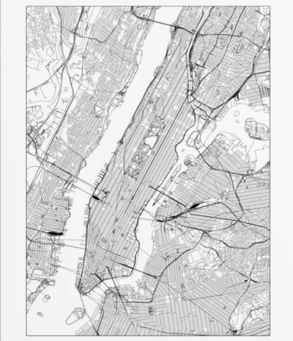

GEOGRAPHY
New York City is situated in the Northeastern United States, in southeastern New York State, approximately halfway between Washington, D.C. and Boston.[164] The location at the mouth of the Hudson River, which feeds into a naturally sheltered harbor and then into the Atlantic Ocean, has helped the city grow in significance as a trading port. Most of New York City is built on the three islands of Long Island, Manhattan, and Staten Island. The Hudson River flows through the Hudson Valley into New York Bay. Between New York City and Troy, New York, the river is an estuary.[165] The Hudson River separates the city from the U.S. state of New Jersey. The East River—a tidal strait—flows from Long Island Sound and separates the Bronx and Manhattan from Long Island. The Harlem River, another tidal strait between the East and Hudson Rivers, separates most of Manhattan from the Bronx. The Bronx River, which flows through the Bronx and Westchester County, is the only entirely fresh water river in the city.[166]
 The city's land has been altered substantially by human intervention, with considerable land reclamation along the waterfronts since Dutch colonial times; reclamation is most prominent in Lower Manhattan, with developments such as Battery Park Cityin the 1970s and 1980s.[167] Some of the natural relief in topography has been evened out, especially in Manhattan.[168]
The city's total area is 468.484 square miles (1,213.37 km2), including 302.643 sq mi (783.84 km2) of land and 165.841 sq mi (429.53 km2) of this is water.[169][170] The highest point in the city is Todt Hill on Staten Island, which, at 409.8 feet (124.9 m) above sea level, is the highest point on the Eastern Seaboard south of Maine.[171] The summit of the ridge is mostly covered in woodlands as part of the Staten Island Greenbelt.[172] New York has architecturally noteworthy buildings in a wide range of styles and from distinct time periods, from the saltbox style Pieter Claesen Wyckoff House in Brooklyn, the oldest section of which dates to 1656, to the modern One World Trade Center, the skyscraper at Ground Zero in Lower Manhattan and the most expensive office tower in the world by construction cost.[174] Manhattan's skyline, with its many skyscrapers, is universally recognized, and the city has been home to several of the tallest buildings in the world. As of 2011, New York City had 5,937 high-rise buildings, of which 550 completed structures were at least 330 feet (100 m) high, both second in the world after Hong Kong,[175][176] with over 50 completed skyscrapers taller than 656 feet (200 m). These include the Woolworth Building, an early example of Gothic Revival architecture in skyscraper design, built with massively scaled Gothic detailing; completed in 1913, for 17 years it was the world's tallest building.[177] The 1916 Zoning Resolution required setbacks in new buildings and restricted towers to a percentage of the lot size, to allow sunlight to reach the streets below.[178] The Art Deco style of the Chrysler Building (1930) and Empire State Building (1931), with their tapered tops and steel spires, reflected the zoning requirements. The buildings have distinctive ornamentation, such as the eagles at the corners of the 61st floor on the Chrysler Building, and are considered some of the finest examples of the Art Deco style.[179] A highly influential example of the international style in the United States is the Seagram Building (1957), distinctive for its façade using visible bronze-toned I-beams to evoke the building's structure. The Condé Nast Building (2000) is a prominent example of green design in American skyscrapers[180] and has received an award from the American Institute of Architects and AIA New York State for its design. The character of New York's large residential districts is often defined by the elegant brownstone rowhouses and townhouses and shabby tenements that were built during a period of rapid expansion from 1870 to 1930.[181] In contrast, New York City also has neighborhoods that are less densely populated and feature free-standing dwellings. In neighborhoods such as Riverdale (in the Bronx), Ditmas Park (in Brooklyn), and Douglaston (in Queens), large single-family homes are common in various architectural styles such as Tudor Revival and Victorian.[182][183][184]